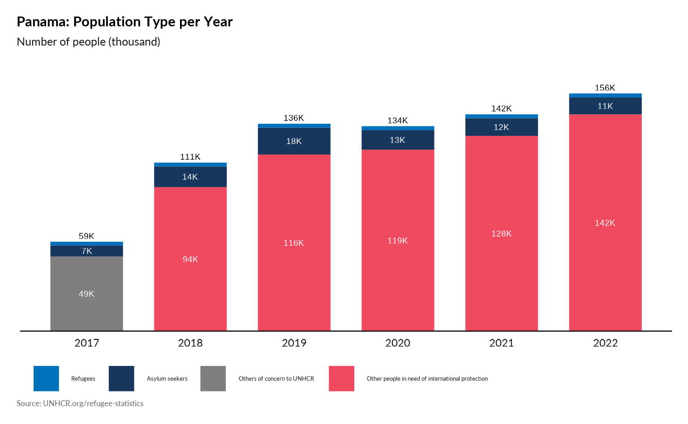
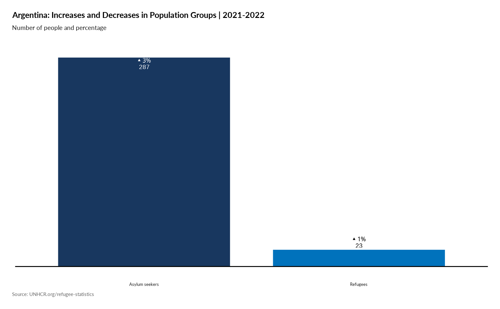

Country Questions
Plot Population type per year
plot_ctr_population_type_per_year(start_year = 2016,
country_asylum_iso3c = "PAN",
pop_type = c("REF",
"ASY",
"VDA",
"OOC",
"STA",
"IDP" )
)
#> Loading required package: ggplot2
#> Loading required package: tidyverse
#> ── Attaching packages ─────────────────────────────────────── tidyverse 1.3.1 ──
#> ✔ tibble 3.1.7 ✔ dplyr 1.0.9
#> ✔ tidyr 1.2.0 ✔ stringr 1.4.0
#> ✔ readr 2.1.2 ✔ forcats 0.5.1
#> ✔ purrr 0.3.4
#> ── Conflicts ────────────────────────────────────────── tidyverse_conflicts() ──
#> ✖ dplyr::filter() masks stats::filter()
#> ✖ dplyr::lag() masks stats::lag()
#> Loading required package: scales
#>
#> Attaching package: 'scales'
#> The following object is masked from 'package:purrr':
#>
#> discard
#> The following object is masked from 'package:readr':
#>
#> col_factor
Plot Main country of origin - Absolute value
plot_ctr_population_type_abs(year = 2020,
country_asylum_iso3c = "USA",
top_n_countries = 4,
pop_type = "REF"
) 
## Same with 9 top countries and asylum seekers included
plot_ctr_population_type_abs(year = 2020,
country_asylum_iso3c = "USA",
top_n_countries = 9,
pop_type = "REF"
) 
Plot Main country of origin - Percentage
plot_ctr_population_type_perc(year = 2021,
country_asylum_iso3c = "BRA",
top_n_countries = 9,
pop_type = "REF" ) 
Plot Increases and Decreases in Population Groups
#
plot_ctr_diff_in_pop_groups(year = 2021,
country_asylum_iso3c = "USA",
pop_type = c("REF", "ASY")
)
Main Destination from this country
#
plot_ctr_destination(year = 2021,
country_origin_iso3c = "COL",
pop_type = c("REF", "ASY")
)
Tree Map of Categories
#
plot_ctr_treemap(year = 2021,
country_asylum_iso3c = "USA",
pop_type = c("REF", "ASY")
)
Refugees Age Pyramid
#
plot_ctr_pyramid(year = 2021,
country_asylum_iso3c = "VEN",
pop_type = c("REF", "ASY")
)
#> Warning: Removed 1 rows containing missing values (geom_label).